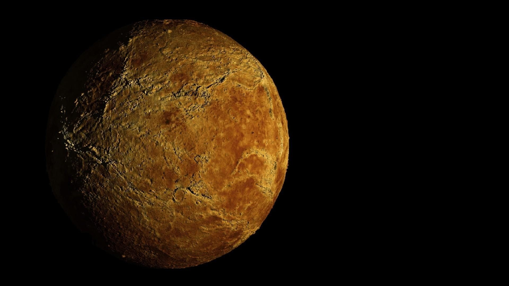
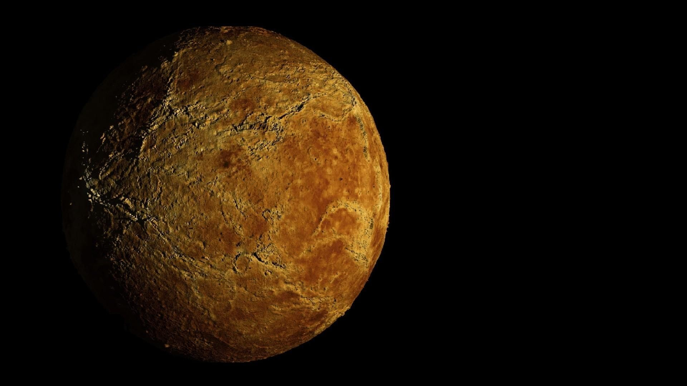

| Categories | Mercury | Venus | Mars | Jupiter |
| Mass (kg) | 3.3 x 1023 | 4.87 x 1024 | 6.42 x 1023 | 1.90 x 1027 |
| Diameter (km) | 4879.4 | 12104 | 6787 | 142,800 |
| Density (kg/m^3) | 5420 | 5250 | 3940 | 1314 |
| Escape Velocity (m/s) | 4300 | 10400 | 5000 | 59500 |
| Rotation Period (length of day in Earth days | 58.65 | 243.02 (retrograde) | 1.026 | 0.41 (9.8 Earth Hours) |
| Revolution Period (Length of year in Earth Days) | 87.97 | 224.7 | 686.98 | 11.86 |
| Distance from Sun | 0.387 AU (57,909,175 km) | 0.723 AU (108,208,930 km) | 1.524 AU (227,936,640 km) | 5.003 AU (778,412,020 km) |
 
